Project 2
Convolution, edge detection, sharpening, hybrid images, and multiresolution blending.
Part 1.1
I implemented 2D convolution in NumPy in two ways. The first version uses four nested loops: over output rows, output columns, kernel rows, and kernel columns. The second version keeps only the two loops over output pixels and replaces the inner two with a single NumPy operation: it slices the window under the kernel and computes np.sum(window * kernel). Both versions flip the kernel first, which is what makes this a true convolution rather than a cross-correlation.
Boundaries. Both functions support "same" padding (pad by k // 2 so the output is the same size as the input) and "full" padding (pad by k − 1). The padding is filled with zeros, so pixels near the border are averaged with black and come out slightly darker. To compare fairly I called scipy.signal.convolve2d(image, kernel, mode="same", boundary="fill", fillvalue=0), which uses the same zero padding. The maximum absolute difference between my two-loop result and SciPy's was 3.3 × 10−16, which is just floating-point rounding.
Runtime. The four-loop version is by far the slowest, because every multiply-add runs in the Python interpreter. The two-loop version is much faster since the inner work is vectorized, but it still loops over every pixel in Python. SciPy is fastest by a wide margin because the entire operation runs in compiled C code. On a 256×256 crop of my photo with a 9×9 box filter, measured with time.perf_counter():
| Method | Time | Max difference vs. SciPy |
|---|---|---|
| 4 loops | 2.508 s | 5.0 × 10−16 |
| 2 loops | 0.241 s | 3.3 × 10−16 |
| SciPy | 0.010 s | — |
The two-loop version is about 10× faster than four loops, and SciPy is about 24× faster than two loops.
On a 256×256 crop with a 9×9 box filter: 4 loops: 2.476 s, 2 loops: 0.239 s, SciPy: 0.01009 s.
I then tested the convolution on a photo of my own (converted to grayscale), using a 9×9 box filter (every entry 1/81) and the finite difference operators $D_x = [1, 0, -1]$ and $D_y = D_x^T$.
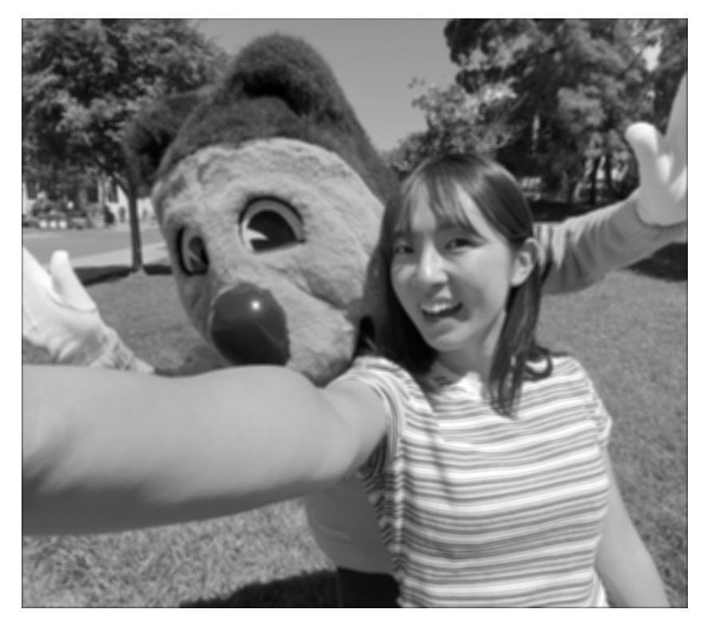
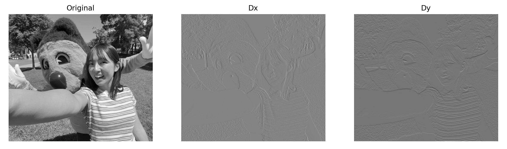
Part 1.2
Convolving the cameraman image with $D_x$ and $D_y$ gives the partial derivatives $\partial I/\partial x$ and $\partial I/\partial y$. Gray means no change; bright and dark lines are places where the intensity changes quickly from left to right or top to bottom.
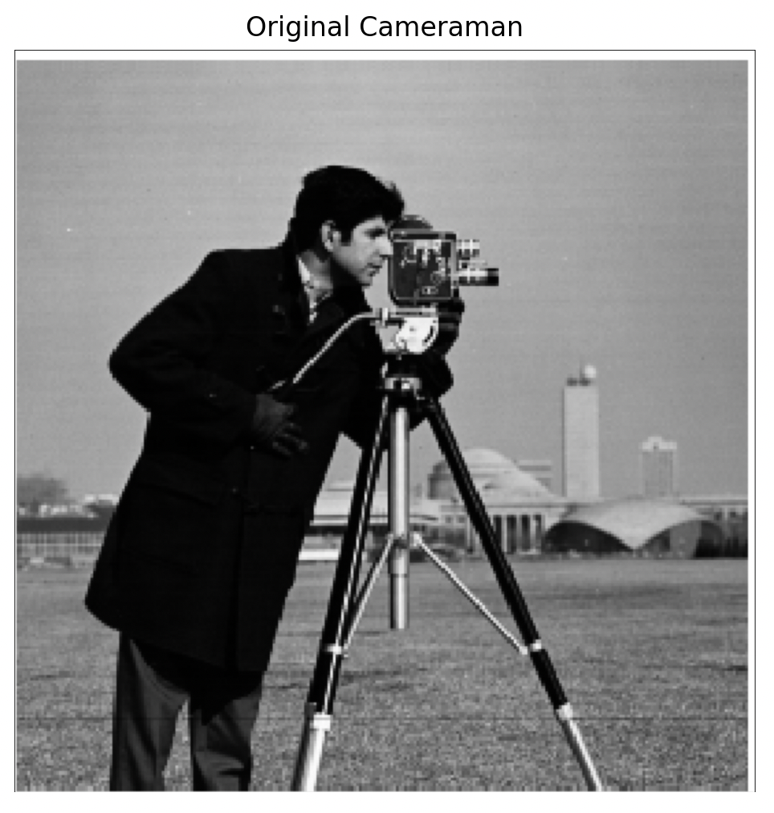
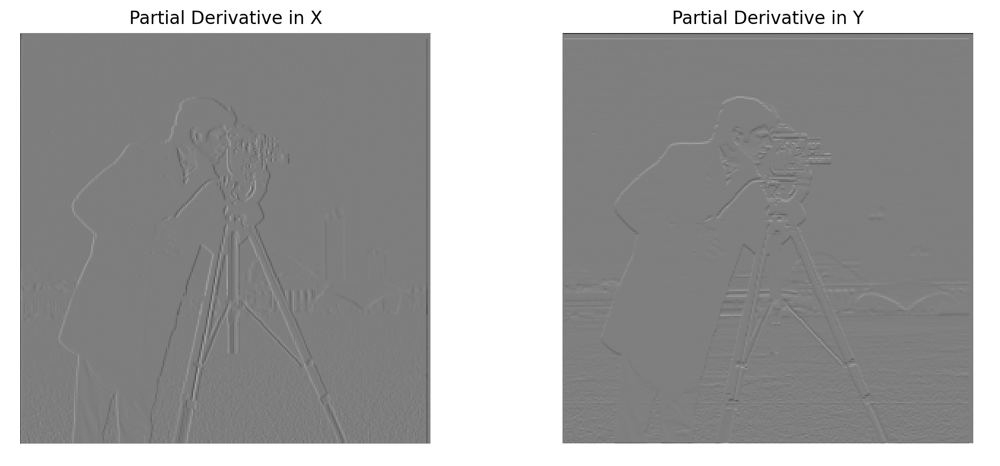
The gradient magnitude combines both directions into a single edge-strength image:
$$\|\nabla I\| = \sqrt{\left(\frac{\partial I}{\partial x}\right)^2 + \left(\frac{\partial I}{\partial y}\right)^2}$$
To get a binary edge map, I normalized the gradient magnitude to [0, 1] and kept every pixel above a threshold. I chose 0.2. Lower thresholds pick up the grass texture and the noise in the sky as "edges"; higher thresholds start losing important edges such as the tripod legs. At 0.2 the grass noise is almost completely gone and the outline of the cameraman, camera and tripod remains. The trade-off is that weaker edges, like the buildings in the background, drop out, and some outlines are broken into pieces. I chose to favor removing noise, because the raw finite difference is very sensitive to it.
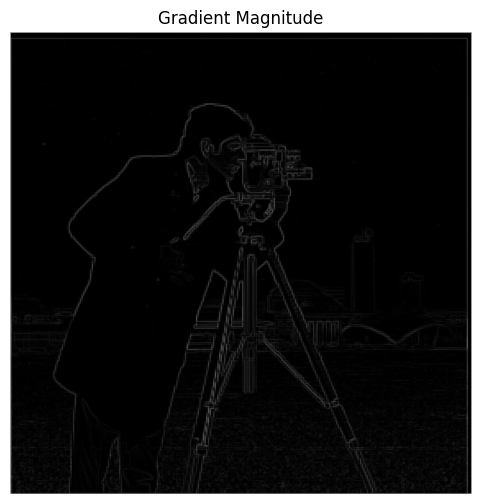
Gradient magnitude
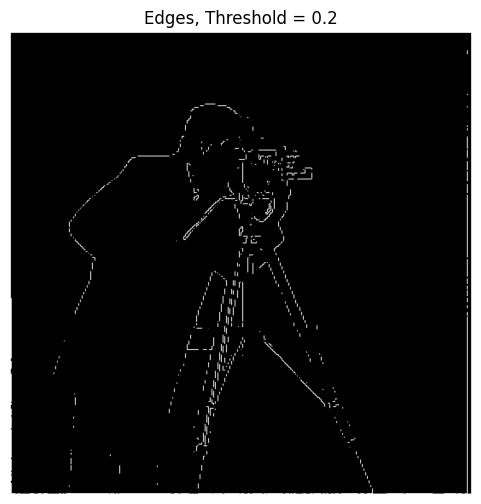
Binarized edges
threshold = 0.2Part 1.3
The finite difference result is noisy, so I first smoothed the image with a Gaussian. I built a 1D Gaussian with cv2.getGaussianKernel(9, 2) (size 9, $\sigma = 2$) and took its outer product with itself to get a 9×9 2D Gaussian.
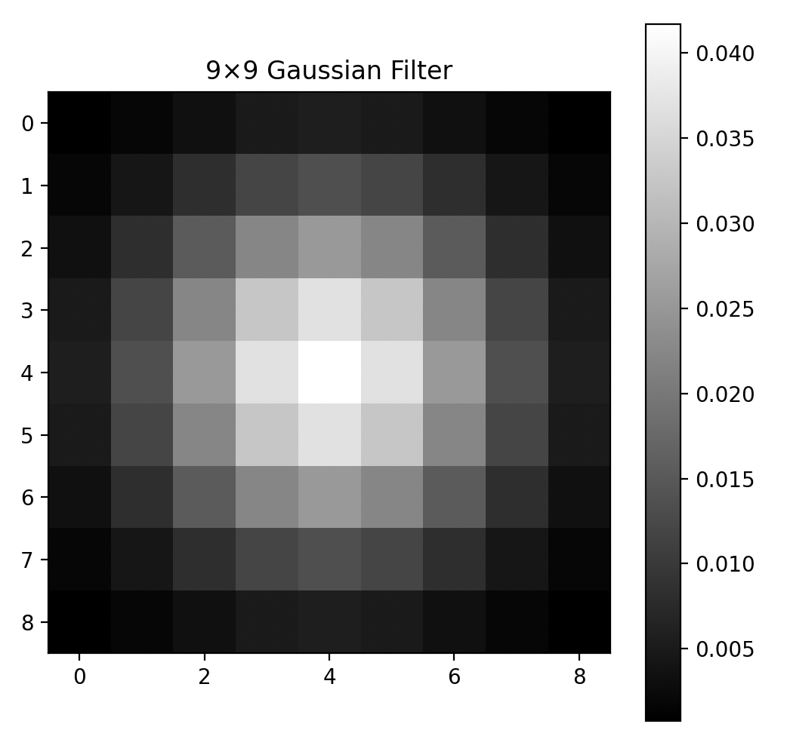
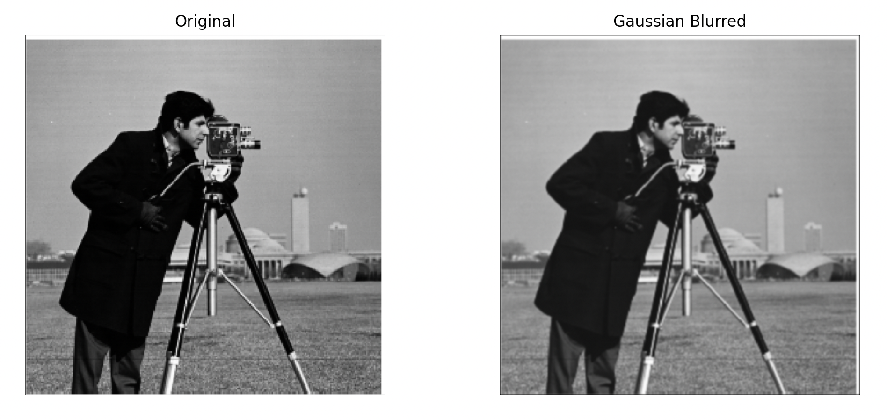
Method 1: blur, then differentiate. Taking $D_x$ and $D_y$ of the blurred image gives a much cleaner gradient magnitude. The blur removes the high-frequency noise in the grass and sky before the derivative can amplify it.
Method 2: a single DoG filter. Because convolution is associative, $(I * G) * D_x = I * (G * D_x)$. So I can convolve the Gaussian with $D_x$ and $D_y$ once to get two derivative-of-Gaussian filters, then apply each filter to the image in a single pass.
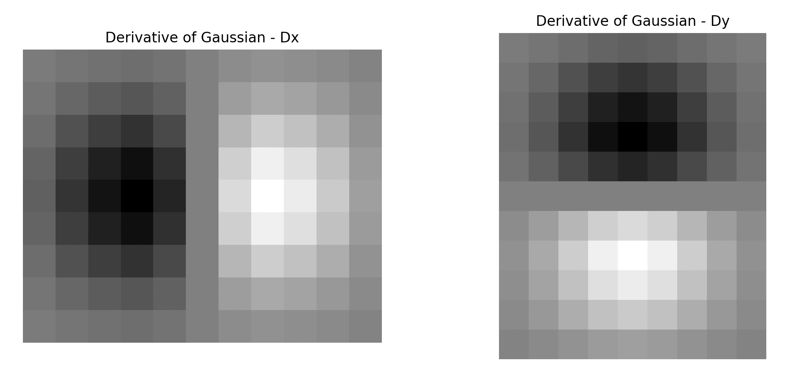
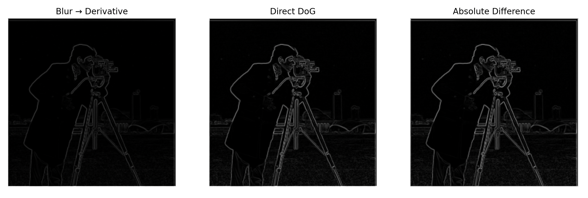
The two methods give the same result: the maximum absolute difference between them was 7.5 × 10−16, which is just floating-point rounding. This required using symmetric (mirrored) padding, boundary="symm", for every convolution on the image. With zero padding, blurring and then differentiating creates a fake edge at the image border. The blur fades the image toward black, and the derivative detects that as a strong edge, which the single DoG pass doesn't produce. That border edge became the maximum value, so normalizing each result by its own maximum made the whole image look different, even though the interior values matched.
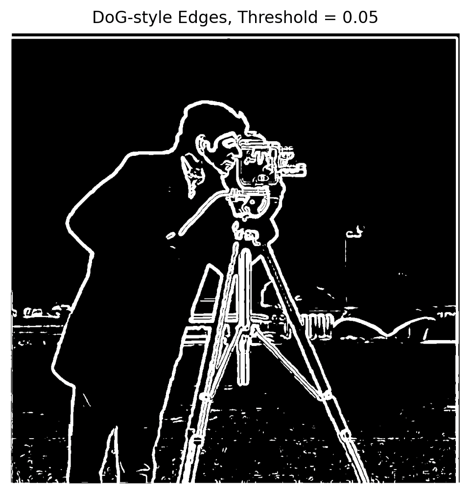
Comparison with finite differences. The DoG edges are thicker, smoother and much less noisy than the plain finite difference edges. The grass speckle is mostly gone, and the outline of the coat, camera and tripod is continuous. Because the blur also weakens the gradient, a lower threshold (0.05) was needed to recover the main edges. The trade-off is that fine detail gets blurred away, and edges are a few pixels wide instead of one.
Part 2.1
A Gaussian blur is a low-pass filter: it keeps the low frequencies (smooth shading) and removes the high frequencies (edges and fine texture). Subtracting the blurred image from the original leaves only the high frequencies:
$$\text{high} = I - I * G$$
Adding a scaled copy of those high frequencies back makes edges look crisper:
$$I_{\text{sharp}} = I + \alpha\,(I - I * G) = I * \big((1+\alpha)\,e - \alpha\,G\big)$$
where $e$ is the unit impulse (a kernel with a single 1 in the center). This means the whole operation can be done as one convolution with the unsharp mask filter $(1+\alpha)e - \alpha G$. I used a 9×9 Gaussian with $\sigma = 2$ and $\alpha = 1.5$.
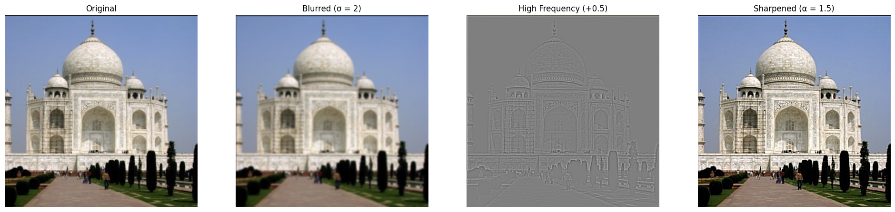
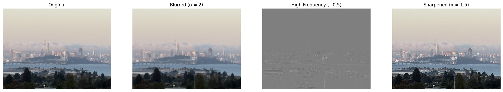
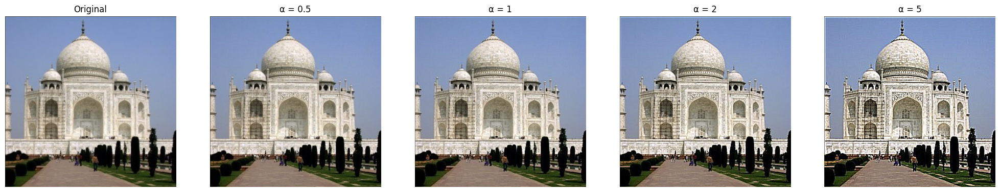
$\alpha$ controls how much of the high-frequency image is added back. At $\alpha$ = 0.5 and 1, the carvings on the dome and the arches get noticeably crisper while the image still looks natural. At $\alpha$ = 2, the edges start to look harsh. At $\alpha$ = 5, the image is clearly over-sharpened: bright halos appear around the trees and the building outline, and the smooth sky becomes grainy because noise is also a high frequency and gets amplified along with the real detail. A moderate value around 1–1.5 gave the best result.
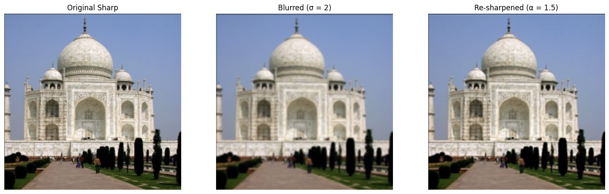
To test whether sharpening can undo a blur, I blurred the sharp Taj Mahal and then applied the unsharp mask filter to the blurred version. The result looks much crisper than the blurred image, since the main edges of the dome, arches and trees come back. It doesn't match the original, though. The finest details, like the carvings and the scaffolding on the facade, stay soft. The blur removed those frequencies almost completely, and sharpening can only boost frequencies that are still in the image. It makes edges look sharper, but it can't recover information that was lost.
Part 2.2
A hybrid image combines the low frequencies of one image with the high frequencies of another. Up close, the high frequencies dominate and you see the sharp image. From far away (or when the image is small), fine detail is no longer visible and only the blurry low-frequency image remains.
First I aligned the two images by clicking two matching points on each, the eyes. The alignment code centers, scales and rotates the images so those points line up. Then:
$$\text{hybrid} = I_1 * G_{\sigma_{\text{low}}} \;+\; \big(I_2 - I_2 * G_{\sigma_{\text{high}}}\big)$$
I used 21×21 Gaussians with $\sigma_{\text{low}} = 5$ for the low-pass image and $\sigma_{\text{high}} = 3$ for the high-pass image. A Gaussian with standard deviation $\sigma$ pixels has a frequency cutoff of about $1/(2\pi\sigma)$ cycles per pixel, so the low-pass keeps below ~0.03 cycles/pixel and the high-pass keeps above ~0.05. I picked these values by trial and error. A larger $\sigma_{\text{low}}$ made the far-away image too blurry to recognize, and a smaller $\sigma_{\text{high}}$ made the close-up image too faint.
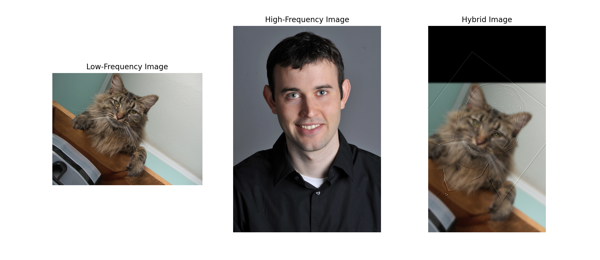
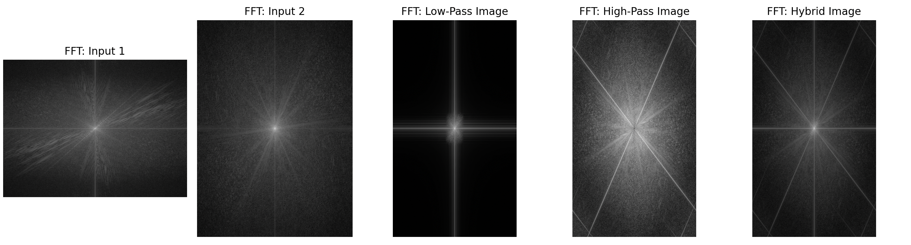
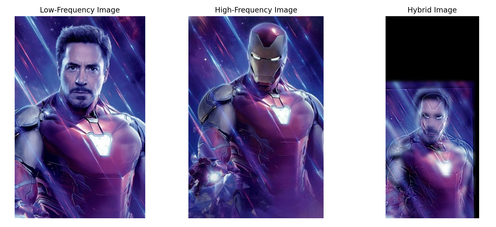
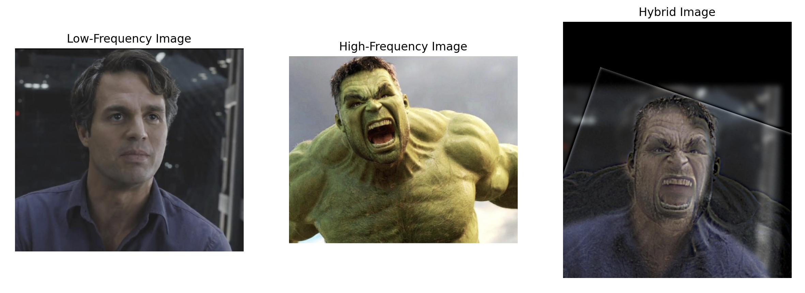
Part 2.3
A Gaussian stack is like a Gaussian pyramid, except that the image is never downsampled. Level 0 is the original, and each next level is the previous one blurred again (9×9 Gaussian, $\sigma = 2$). Every level stays the same size, which makes blending easy later.
A Laplacian stack stores the difference between neighboring Gaussian levels, $L_i = G_i - G_{i+1}$, so each level holds one band of frequencies. The last level is the blurriest Gaussian level itself, so the stack sums back to the original exactly:
$$\sum_i L_i = G_0 = I$$
I built 5-level stacks for the apple and the orange. Both images were converted to RGB (dropping the alpha channel) and cropped to a common size of 478×662.
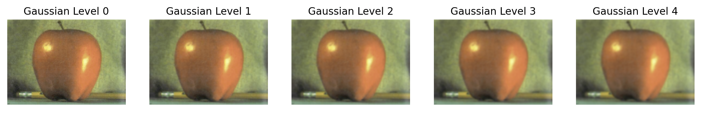
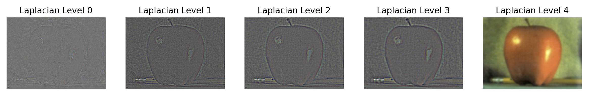
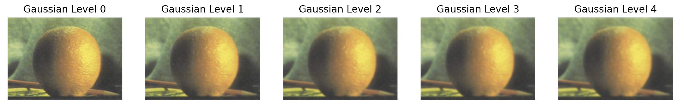
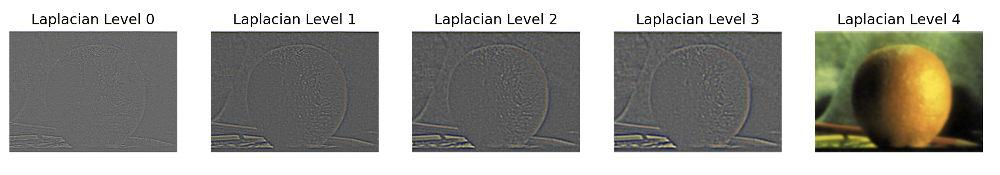
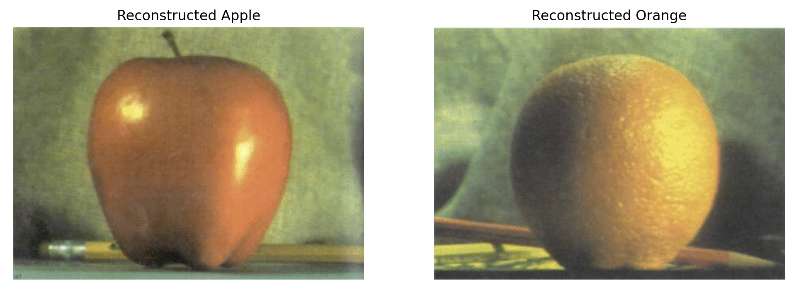
Part 2.4
To blend the apple and orange, I used a step-function mask: 1 on the left half (apple) and 0 on the right half (orange). I built a Gaussian stack of the mask as well, then blended each Laplacian level separately using the matching mask level:
$$L^{\text{blend}}_i = G^{\text{mask}}_i \cdot L^{\text{apple}}_i + \big(1 - G^{\text{mask}}_i\big)\cdot L^{\text{orange}}_i$$
Summing the blended levels gives the oraple. At level 0 the mask is still sharp, so fine texture switches abruptly at the seam. At the deeper levels the mask is blurry, so the colors and shading fade gradually. Using a separate transition width for each frequency band is what hides the seam.
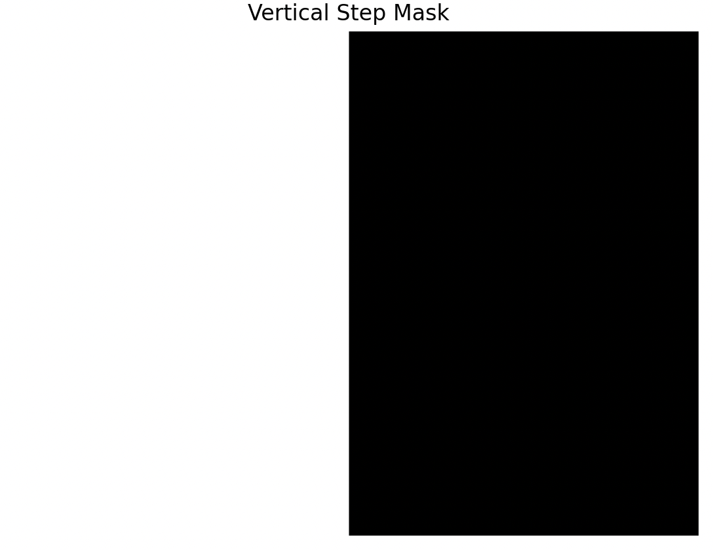
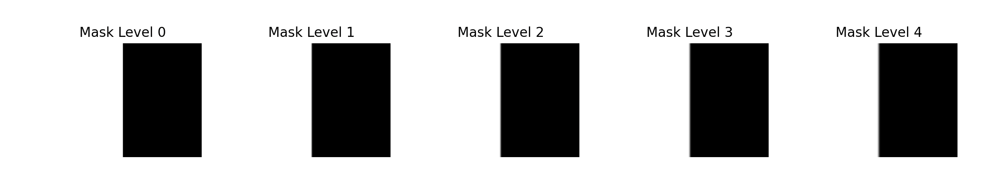
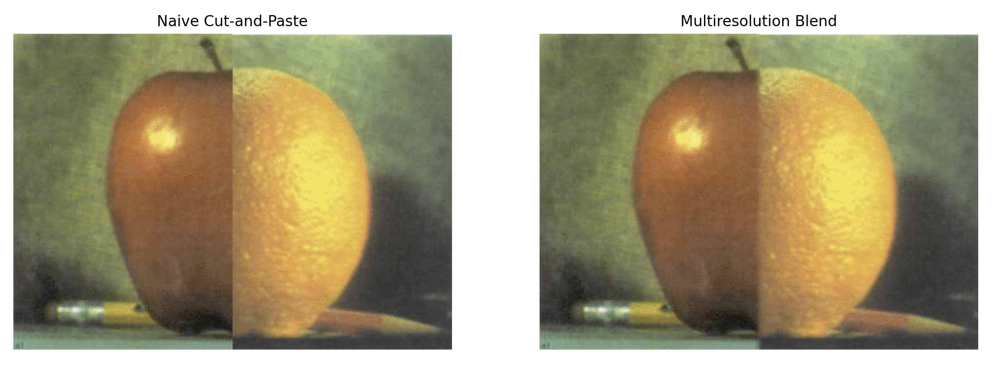
Blurring four times with $\sigma = 2$ only adds up to a total blur of about 4 pixels, which is almost a hard edge on a 662-pixel-wide image. I increased the mask blur to a 31×31 kernel with $\sigma = 5$ (kernel size ≈ 6σ, so the Gaussian isn't cut off). The apple and orange stacks stayed at $\sigma = 2$; they only need the same number of levels as the mask.
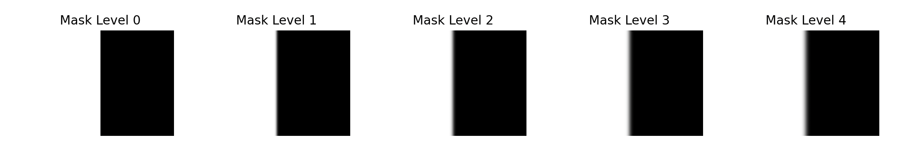
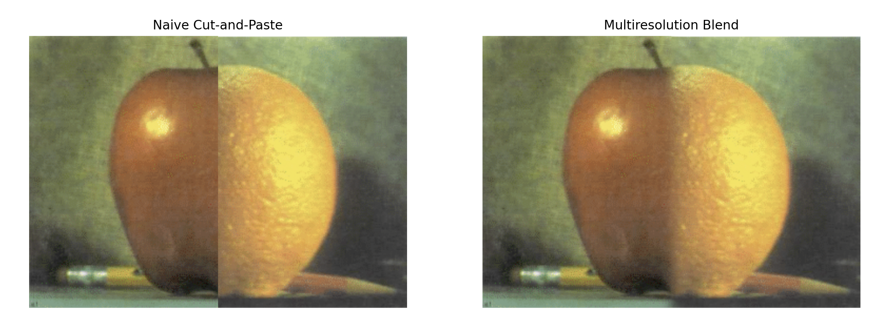
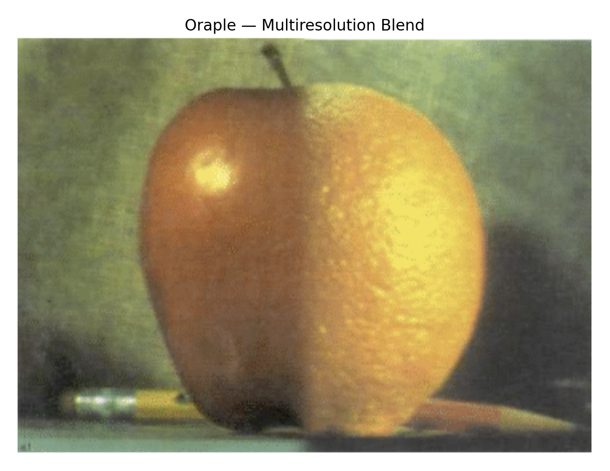
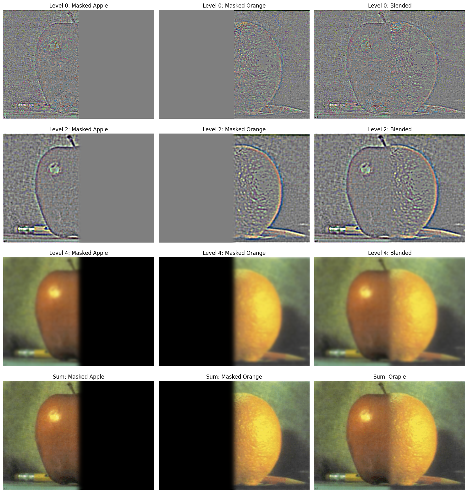
Laplacian bands are centered at zero, so I display them with zero as mid-gray, using the same contrast for all three images in a row. The figure shows why the blend works. At level 0, the mask is still almost a hard edge, so the fine texture (the orange's pores, the apple's surface) switches over within a few pixels. At level 4, the mask has been blurred much more, so the colors and shading fade over a wide region. Summing the levels gives an oraple whose texture changes sharply at the seam while its color changes gradually, so no obvious seam is visible.
For the irregular mask, I made the Berkeley campus appear through Dr. Strange's magic portal. I started from a circular mask and stretched it into an ellipse (separate horizontal and vertical radii) to match the oval shape of the portal. I placed it just inside the ring of sparks, so the sparks stay on top of the Berkeley view. Because the two images are different sizes, I resized the Berkeley photo and shifted it so the Campanile sits in the middle of the portal. Areas outside the portal are filled by repeating edge pixels; they're hidden by the mask anyway. The images use 5-level stacks ($\sigma = 2$), and the mask stack uses a 31×31 Gaussian with $\sigma = 5$, which gives the soft glowing edge.
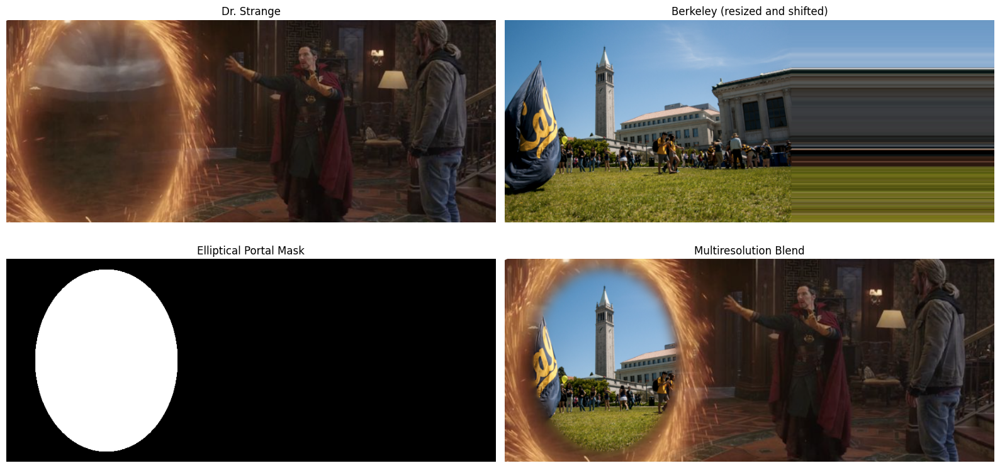
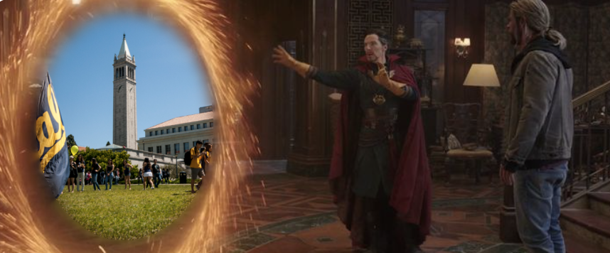
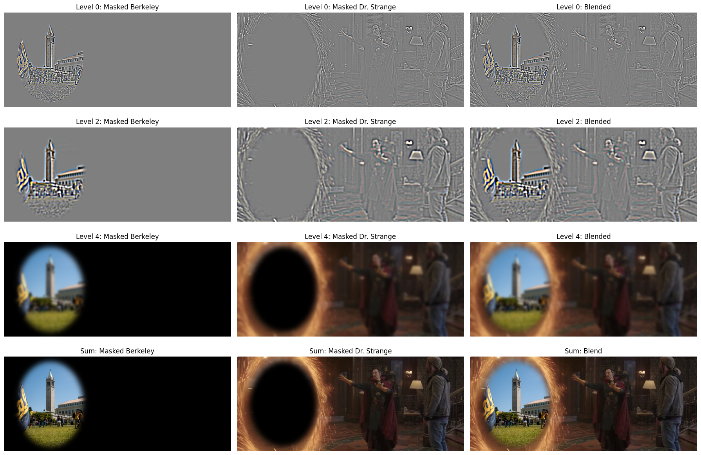